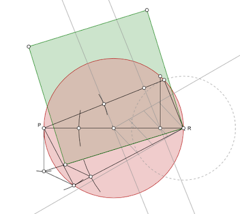

Ramanujan's 1914 construction for approximately squaring the circle.
Final Paper Guidelines:
The final paper is necessarily a group project and must be executed by a group of two to three students. Some topics for the final paper are listed below. You can choose one of these or propose your own topic. Please discuss your topic with either the instructor or the teaching fellow before you start writing.
- Historical Approaches to the Squaring of the Circle Problem
- Evolution of π (Pi) Approximations in Classical and Medieval Indian Mathematics
- Jaina Contributions to Mathematics
- The Works of Mathematicians not Discussed in Class (such as Lalla, Mahavira, Sridhara, Jyeshthadeva, Narayana Pandita)
- Development of Spherical Trigonometry and Navigational Calculations
- The Influence of Caste Systems on Knowledge Transmission in Pre-Colonial India
- Computations and Algorithms in Indian Astronomy
- Mathematical Structures in Indian Classical Music Theory and Practice
- The Development of Mathematics During Mughal India
- British Imperial Influence on Traditional Indian Mathematical Knowledge
- The Role of Aesthetics in Mathematics
- The Mathematics of the Ashoka University Logo
- Submit a proposal for the final paper by July 17, 2025.
- Submit a draft of the final paper by August 4, 2025.
- Submit the final paper by August 12, 2025.